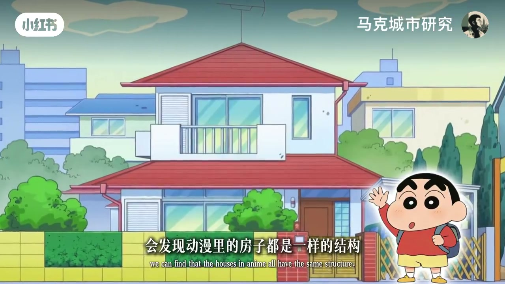
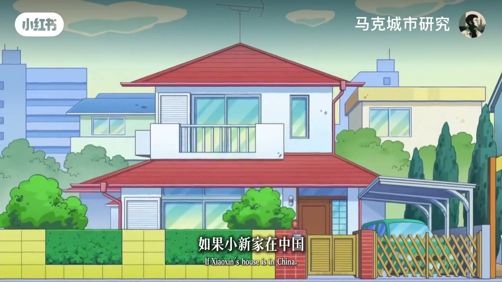
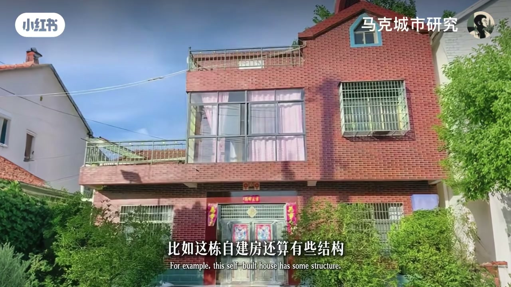
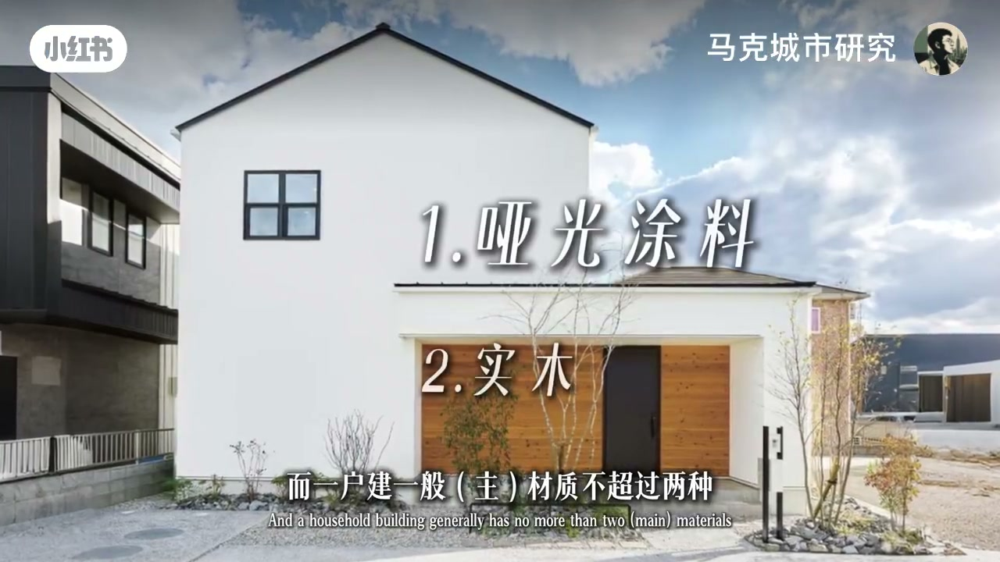
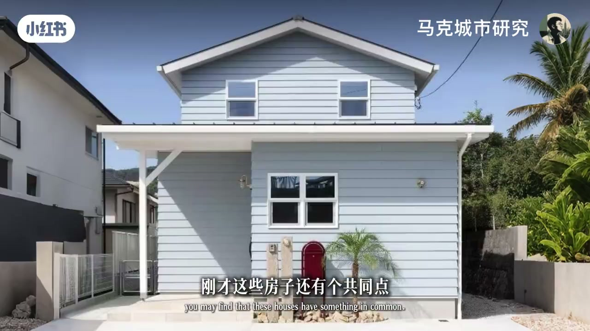
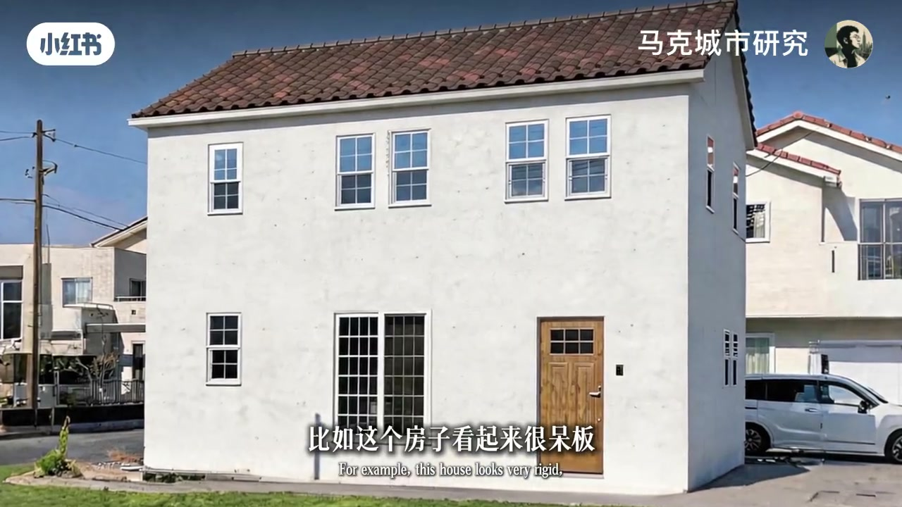
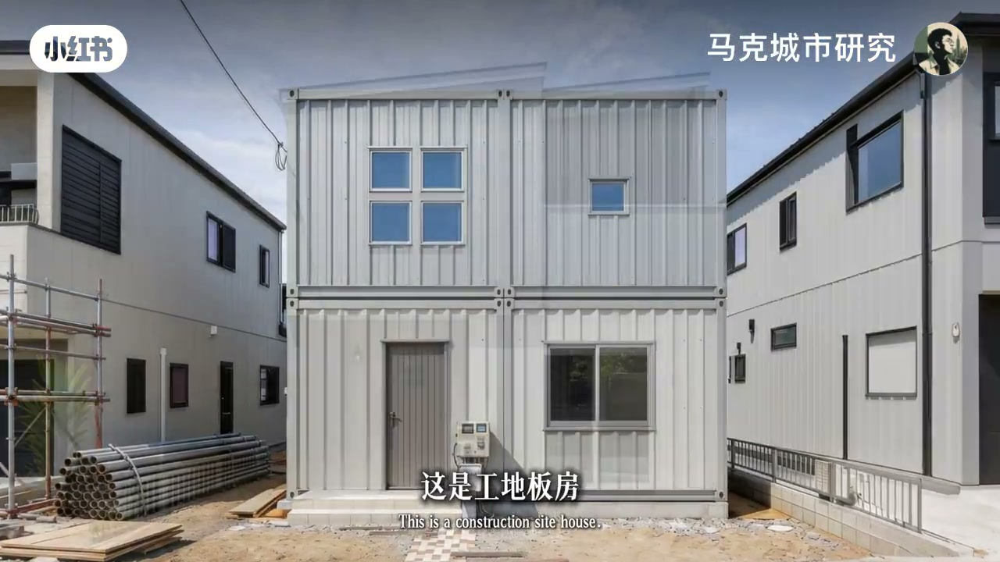
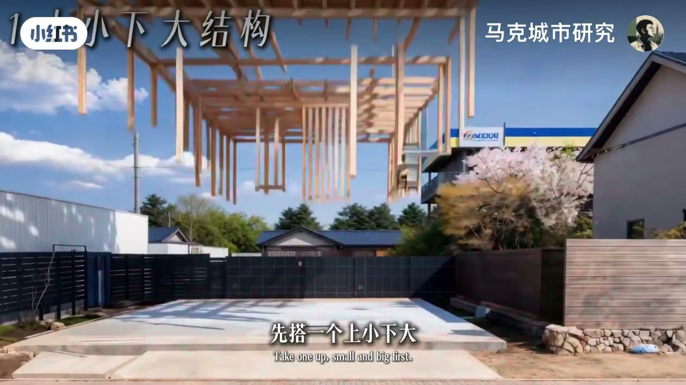

内容要点
一支 2 分钟的建筑审美分析：为什么日本一户建感觉比我们的自建房好看，明明没什么复杂设计却看着很舒服？作者提炼出三条简单通用的设计规律——结构上小下大降低重心、外墙材质与配色协调统一、错落感是决定设计感的核心要素。最后把规律总结成一个可操作的公式：先搭上小下大、有错落感的结构，选一组色调相近的颜色，最后摆上绿植，平平无奇的房子也能好看。
知识结构
一户建没什么复杂设计却看着舒服，问题出在哪？有没有简单通用的设计规律能让自建房好看一点？
动漫里房子都是下大上小、降低整体重心，给人温馨感；我们的房子上下一样，像笨重水泥压在地上。
外墙是质感的精髓；反光不锈钢、彩色窗户、细碎小瓷砖都是不协调因素，统一就能好看。
一户建材质不超过两种、反光度相似，颜色每种各一种、色调相近、饱和度低；少用细碎小瓷砖，缝隙多显乱。
呆板房子加凹凸设计感觉就来；工地板房与设计师的家对比；加光影、加木质、加院墙都是增加错落感。
上小下大+错落感的结构，色调相近的颜色，最后摆上绿植——一个平平无奇的房子就盖好了。
好看的房子不需要高深设计：结构上小下大、有错落感，外墙材质少而统一、色调相近低饱和，再用绿植点缀。三条规律叠加，就是「平平无奇但很舒服」的审美密码。
00:13-00:38结构：上小下大降低重心
00:00为什么日本的一户建感觉就是比我们的自建房好看一些？明明也没啥复杂的设计，但看着就是很舒服。问题究竟出在哪里？有没有什么简单通用的设计规律，能让自建房好看一点？
00:13首先看结构。稍微观察会发现，动漫里的房子都是同样的结构——下面大上面小，降低整体重心，给人一种非常温馨的感觉。与之对比，我们的房子通常上下一样，像一大块笨重的水泥压在地上，失去了房子该有的温馨感。

00:30如果小新家在中国，可能会变成这个样子——而且三楼恐怕还是空的。

00:38-00:57外墙：协调足矣
00:38糟糕的外墙更是质感的精髓。那么什么样的外墙才能看得舒服一点？其实协调足矣。比如这栋自建房还算有些结构，但墙反光的不锈钢、彩色的窗户、窗帘，还有细碎杂乱的小瓷砖，都是不协调因素——统一就能好看点，结构再完善下，颜值可以更高。

00:57-01:12材质与颜色
00:57而一户建一般材质不超过两种，且反光度相似；颜色也是每种各一种，并且色调相近、饱和度低。作者特别提到很少用细碎的小瓷砖——因为过多的缝隙显得很乱。碎墙面可以做装饰，但最好不要做主体。

01:12-01:39错落感：设计感的核心
00:72此时会发现，刚才这些房子还有个共同点，这个点甚至可以说是决定一个房子有无设计感的核心要素——那就是错落感。比如这个房子看起来很呆板，但稍微给些凹凸的设计，感觉一下子就来了。

00:85这是工地板房，而这样就是建筑设计师的家——多层次的错落感让建筑更加灵动。包括给廉价的建筑加上光影，给冰冷的建筑加上木质，给单薄的建筑加上院墙，都是增加错落感的原理。


01:39-01:59总结公式
00:99回头看我们的房子，层次不超过两层，自然不错落、不好看。总结一下：想做一个好看些的房子，其实并不需要多高深的设计——先搭一个上小下大、并有些错落感的结构，然后选一组色调相近的颜色，最后摆上一些绿植，一个平平无奇的房子就盖好了。
